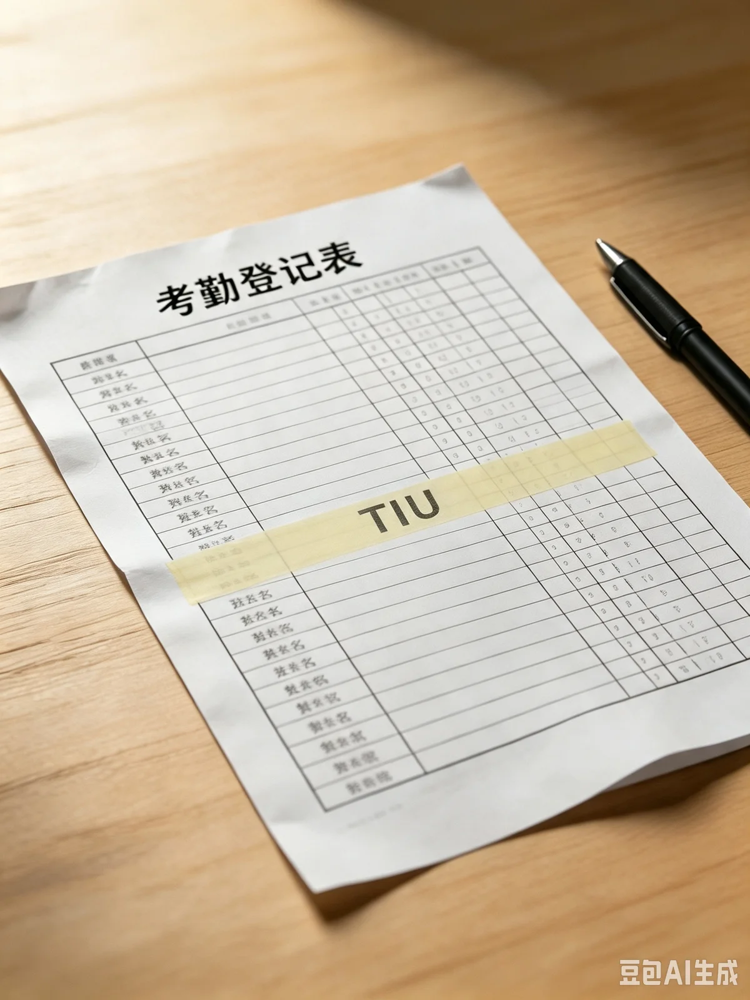

首页 › 组织架构 › 秘书处
秘书处
综合统筹与后勤保障核心部门
部门简介
秘书处是科联的综合统筹与后勤保障核心部门，主要承担内部管理、文书档案、会务统筹、物资经费、对外对接等基础性、保障性工作，保障科联整体规范、高效运转。
主要工作事项
文书档案管理——负责科联所有活动策划、工作总结、申报材料、公示文件、会议记录等文字资料的收集、整理、校对与归档，同步完成纸质与电子档案留存，建立标准化档案库，实现资料可查、可用、可追溯。
会务管理工作——统筹科联全员大会、部门例会、工作部署会等各类会议，负责会议通知、场地申请、流程对接、内容记录、纪要整理下发等全流程工作，落实各项工作部署传达。
人事考勤管理——负责科联成员招新备案、日常考勤（含暑期三下乡等外出实践专项考勤）、工作登记、学期考核、评优评先等工作，规范内部人员管理，统计成员工作履职情况，搭建科学的内部考核体系。
物资与经费管理——统一负责科联办公物资、活动物料的采购、登记、领用、保管与盘点，规范物资使用流程；负责各类活动经费的申请、核算、报销与台账登记，确保经费使用透明合规、账目清晰无误。
内外统筹对接——对内协调各部门工作衔接、任务分配与工作复盘，跟进各项活动落地收尾；对外对接学院团委、各学生组织、班级科创负责人，及时传达通知、对接工作事宜，搭建顺畅的沟通协作渠道。
原则上，成员离队、返程或临时变更行程，应由本人或带队负责人完成登记。
附件与归档（内部）
以下为秘书处 2026 年度部分归档材料目录。
| 编号 | 材料名称 | 归档日期 | 状态 |
|---|---|---|---|
| M-2026-003 | 2026 年度招新备案表 | 2026-03-12 | 已归档 |
| M-2026-029 | 2026 暑期三下乡队伍名单（定稿） | 2026-07-10 | 已归档 |
| M-2026-041 | 7 月考勤登记表（含三下乡专项） | 2026-07-31 | 已归档 |
| M-2026-044 | TIU 下乡考勤登记表（2026-07-14 提交） | 2026-07-31 | 已封存 |
（注：表格下方有一行批注，归档时已做涂黑处理。）
